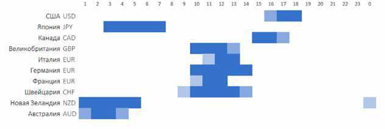

3. Фундаментальный анализ
Торговля на новостях привлекает многих трейдеров своей простотой и высокой прибыльностью. Во время выхода новостей буквально в течение одной минуты курс валютной пары может пройти расстояние, равное его среднему дневному диапазону.
Еще одним преимуществом новостной торговли является большое число торговых возможностей. Forex работает 24 часа в сутки, и за день выходит как минимум с десяток новостей по основным валютам. В статье пойдет речь о том, как подготовится к выходу новости, как правильно выбрать момент для входа и каких подводных камней стоит ожидать при торговле по данному методу.
Экономические индикаторы – это главные катализаторы краткосрочных движений на рынке валют.
На рисунке снизу отмечены примерные периоды выхода наиболее важных новостных релизов, с разбивкой по странам и валютам (московское время). Даже если вы не торгуете по новостям, в это время нужно соблюдать особую бдительность. Новости по США, например, могут повлиять на курс сразу всех мажорных пар. Если вы торгуете на основе технического анализа, то следует в обязательном порядке избегать какой-либо торговли в период выхода новостей.

Торгуя по новостям, вы, в первую очередь, должны определить, какие, собственно, новости ожидать на неделе. Имея на руках список будущих релизов, вторым шагом нужно выделить из этого списка самые важные события. То есть, нужно отобрать те события, которые потенциально могут спровоцировать большие движения на рынке. Независимо от страны, к таким событиям относятся:
В зависимости от текущего состояния экономики определенной страны, относительная важность каждого из этих индикаторов может меняться. Например, при завышенных ожиданиях отчет по уровню занятости может оказаться значительно более значимым, чем изменения в кредитной политике государства. Поэтому важно понимать, куда именно сейчас смотрит рынок.